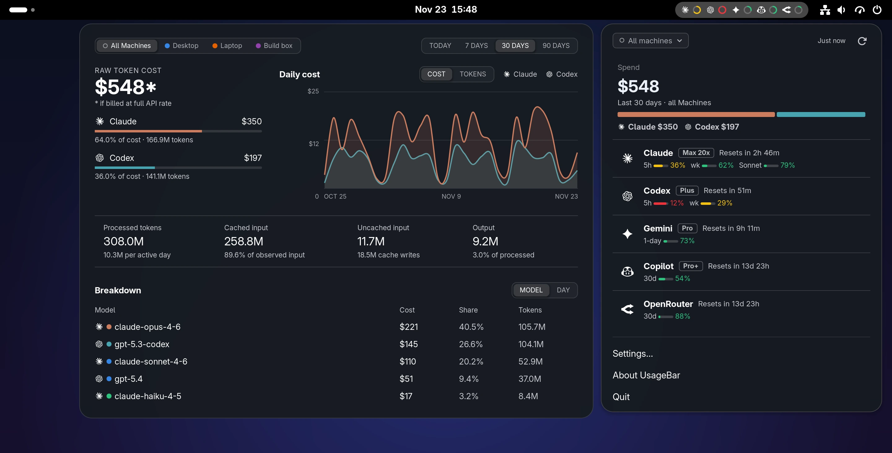
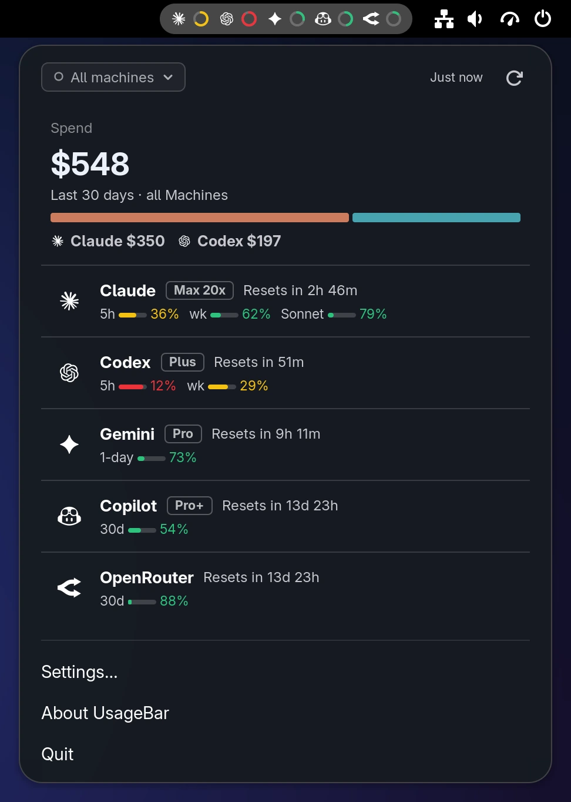
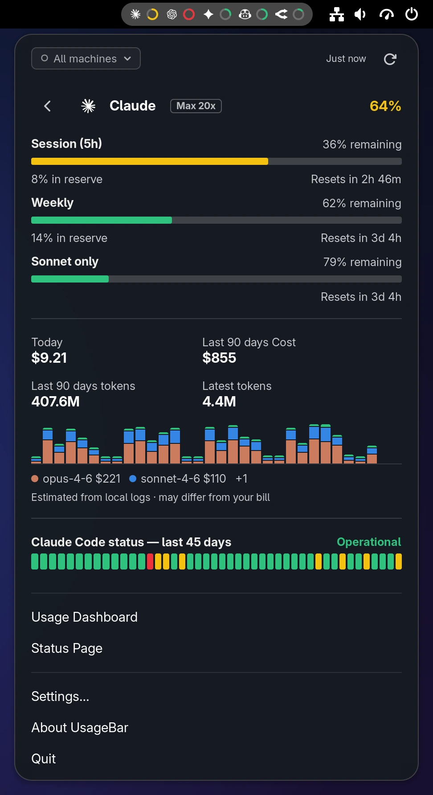
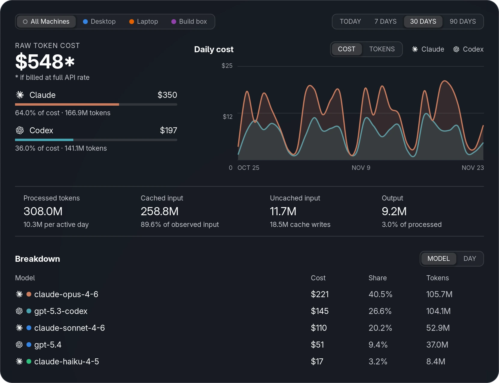
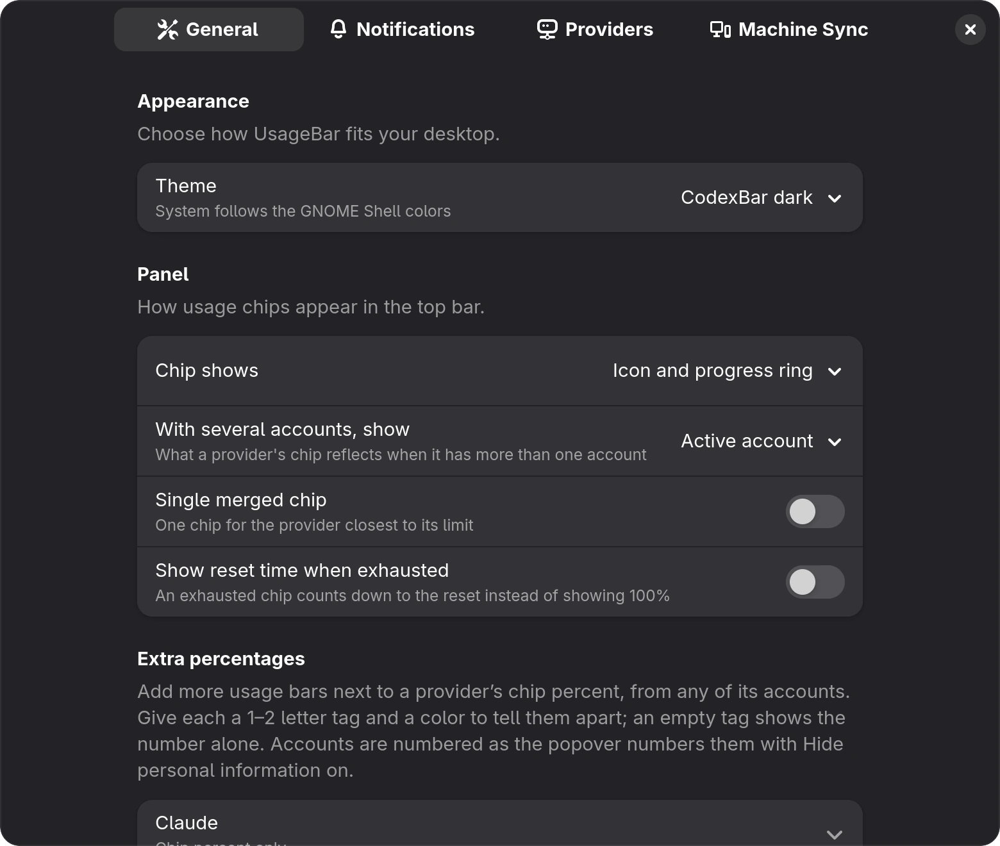
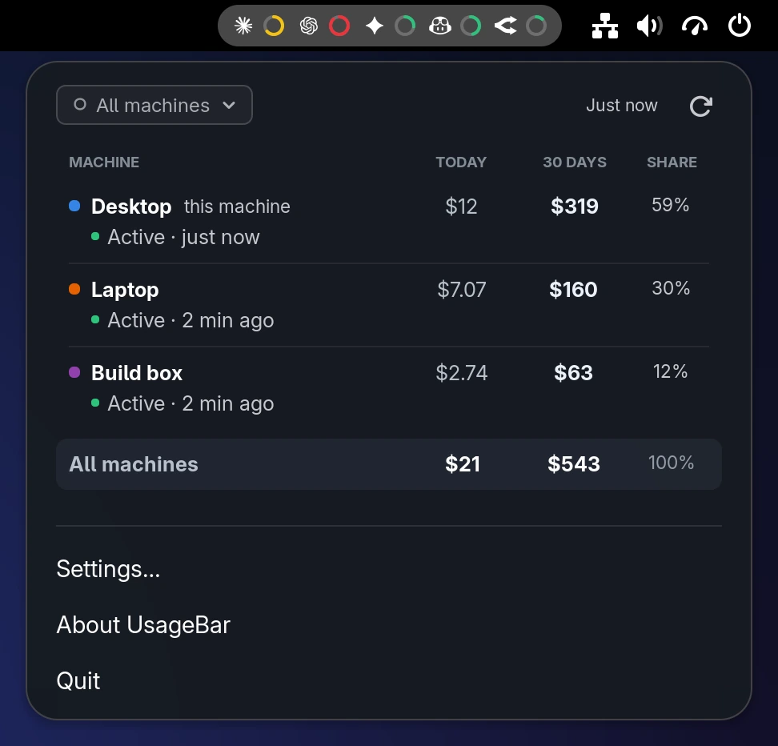
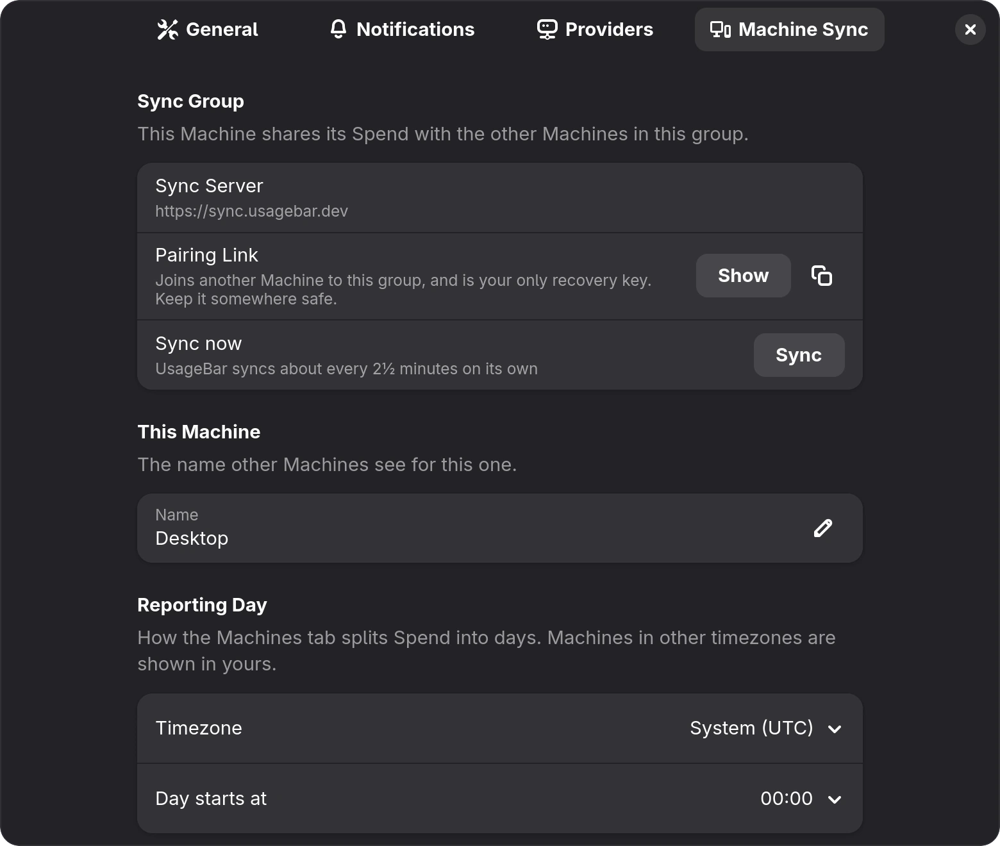

Run your own
Free
UsageBar works with any server that speaks the Machine Sync protocol. The app doesn't name or prefer one.
- Open protocol, with test vectors
- Fine on a tailnet or behind your own TLS proxy
- The data stays on your hardware
UsageBar shows how much Claude, Codex, Gemini and Copilot quota you have left, when each window resets, and what you've spent. It sits in the GNOME panel, one glance away.

Subscriptions, API keys and credit balances, side by side. Turn on the ones you use.
Each provider gets a chip in the top bar: a ring that fills as you use up a window and turns from green to yellow to red. Click it to see every provider at once, with what's left in each window and when it resets.

Open a provider for every rate window it reports, including per-model limits like Claude's Sonnet-only week. Pace compares how fast you're going with how much time is left, and says when you'd run out.

UsageBar reads the agent session logs on your machine and prices them at API rates: cost and tokens per day, per provider and per model, for today or the last 7, 30 or 90 days. It's an estimate from local logs, so it can differ from your bill.

A native Settings window, no config files. Turn providers on and off, pick what the chips show, set the warning thresholds and the refresh interval, and choose which windows deserve a notification.

A desktop notification at the thresholds you choose, separately for session and weekly windows. Once per threshold, then nothing until the window resets.
Two Claude subscriptions or three OpenRouter keys each get their own row and their own quota. Switch the Claude account that Claude Code uses from the card.
When a fetch is rate limited or fails, UsageBar keeps the last good numbers on screen, greyed and marked, and says in plain words what needs fixing.
The extension runs its own helper on 127.0.0.1 and talks to the providers you turn on. No telemetry, no UsageBar account.
It reuses the logins you already have: Claude Code, the Codex CLI, API keys. Claude and Codex are switched on for you if you're signed in.
A tray app covers KDE, XFCE and other desktops. On macOS, use CodexBar, the project UsageBar is built on.
Spend is counted from the logs of the machine that did the work. Machine Sync shares it between your desktop, your laptop and that build box, so each one shows the total and which machine spent what. It updates about every 2½ minutes.


In Settings → Machine Sync, enter your Sync Server's address. UsageBar makes the group's key on your machine.
Paste the Pairing Link on each one. There's no account and no password; the link is the key.
Every machine shows up with today's spend, its 30 days and its share, in the popover and the dashboard.
Your machines encrypt every record with a key that never leaves them (ChaCha20-Poly1305, derived from the Pairing Link) before uploading it. The server stores what it can't read, whoever runs it.
Only spend is synced. Quota, credentials, project names, file paths and log content stay where they are.
Read the protocolFree
UsageBar works with any server that speaks the Machine Sync protocol. The app doesn't name or prefer one.
$2 / month
A Sync Server run for you. Nothing to install or keep online.
UsageBar needs GNOME 46, 49 or 50: Ubuntu 24.04, 25.10 or 26.04, or Fedora 43 or 44. The package holds the extension and its command-line helper.
Download the .deb from the latest release, then:
sudo apt install ./usagebar_*.debDownload the .rpm from the latest release, then:
sudo dnf install ./usagebar-*.rpmThe usagebar command on its own, with Machine Sync, for servers and other desktops. It installs into ~/.local and checks the download's checksum.
curl -fsSL https://raw.githubusercontent.com/felipearosr/UsageBar/main/linux/packaging/install-cli.sh | shLog out and back in once after installing the package. UsageBar then turns itself on. It isn't on extensions.gnome.org yet.
Quota comes from each provider's own API, using the sign-in you already have on this machine. Spend is estimated from the agent session logs on your disk, priced at API rates.
No telemetry and no analytics. It talks to the providers you turn on and to their public status pages. If you pair it, it also sends encrypted spend to the Sync Server you chose, and nothing else.
Any provider that signs in with a token, an API key or its own CLI works. A few whose only data source is a macOS browser cookie or the macOS Keychain show an error row in place of numbers.
UsageBar is a fork of CodexBar by Peter Steinberger, the macOS menu bar app whose provider integrations it uses. The fork adds the GNOME extension, a tray app and Machine Sync, and merges each upstream release. On macOS, use CodexBar.
No. UsageBar is an independent open-source project. Provider names and logos belong to their owners.
Yes. The protocol is public, and UsageBar pairs with any server that implements it. Hosted Sync is there if you'd rather not run one.